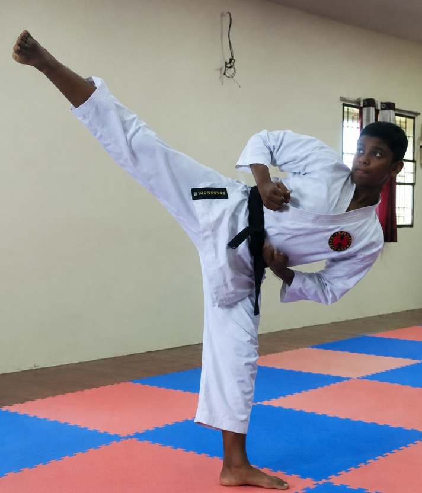

Karate
The begining
Karate started much younger than Table Tennis more than a sport it's muct it will teach you how to control your emotions during those Adrenaline sopikes
karate taught me self defence and how to be emotionally controled not to loose the cool when you get angry. My sensi Mr. Eashwer Kumar trained me as a perfect student with that balances stance which is kinda hard to get in young age but I was gifted wit a wonderful sensi

Major Achievements
I have won the nationals twice with a gold and silver in Kata and 2 brondze in kumite representing Tamil Nadu
The major open tournaments that I won was 2 tournaments in Madurai, and the open school level tournament in Yearcadu Montfort and the open Doubles tournament conducted by the Sea Gate in Vellankanni

Nationals & SGFI
Ialso participated and won the gold in the All Indian Youth Sports and Games conducted by the All indian youth association when I was studying 9th at GOA which was one of my favourite experiences
I also finished in the top 8 in the SGFI(School Games federation of India) in my last 2 yeasrs of schooling qualifying outside the leauge and playing the super leauge.
